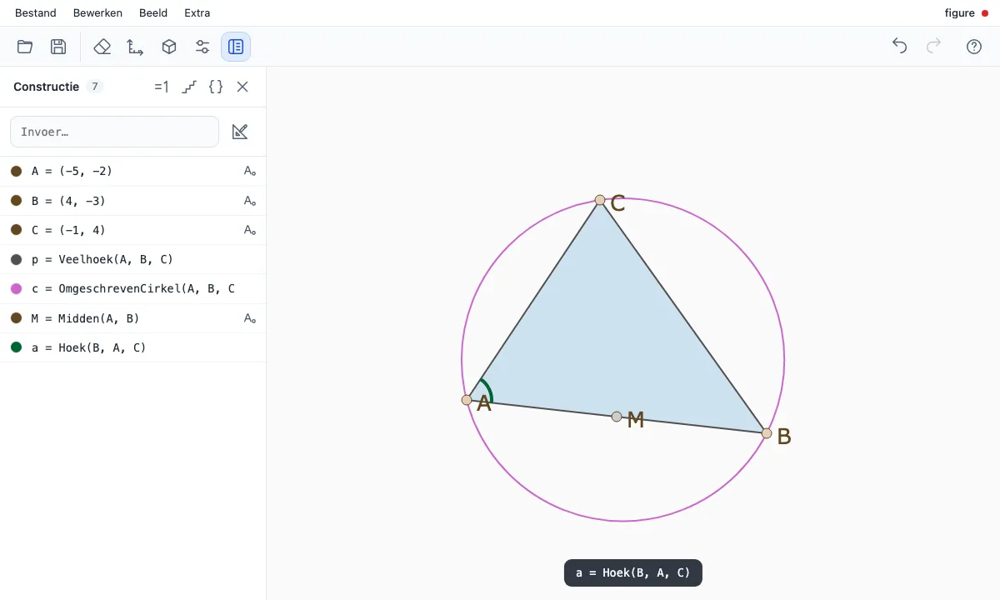
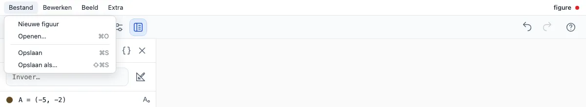

De interface

De menubalk

| Menu | Opdrachten |
|---|---|
| Bestand | Nieuwe figuur, Nieuwe pagina, Pagina verwijderen (werkmappen), Openen… (Ctrl O), Opslaan (Ctrl S), Opslaan als… (Ctrl Shift S), In een webpagina insluiten… |
| Bewerken | Ongedaan maken, Opnieuw, Verwijderen, Gum |
| Beeld | Assenstelsel, 3D-weergave, Constructiegeschiedenis, Gereedschapspalet, Eigenschappen, Volledig scherm (verlaten met Esc): een vinkje toont wat wordt weergegeven |
| Extra | Gebruikershandleiding, DocTools, Licentie & GitHub, Over… |
Rechts de bestandsnaam van de figuur, in Chrome en Edge (opslaan). De menubalk verschijnt niet wanneer DocGeo in een andere pagina is ingebed, zoals DocTools.
De actiebalk
| Knop | Functie | |
|---|---|---|
| Openen |
.dgo, .dgp,
.ggb
|
|
| Opslaan | als .dgo |
|
| Gum | objecten verbergen of tonen (gum) | |
| Assenstelsel | assen en rooster; in 3D assenkruis en vloer | |
| 3D-weergave | naar de ruimte gaan of terug naar het vlak (3D) | |
| Gereedschapspalet | rechterpaneel met de gereedschappen (palet) | |
| Eigenschappen | rechterpaneel (eigenschappen) | |
| Constructie | linkerpaneel | |
| Ongedaan maken, Opnieuw | Ctrl Z, Ctrl Shift Z of Ctrl Y | |
| Gebruikershandleiding | opent de handleiding in de taal van DocGeo, in een nieuw tabblad |
In het midden toont de contextzone de naam en de acties van het geselecteerde object.
Het paneel „Constructie”
-
Eén regel per object, in de volgorde van de constructie:
M = Midden(A, B). Elke regel is te wijzigen (herdefinitie). - Het bolletje vooraan de regel verbergt of toont het object; achteraan de regel toont zijn naam. Dat van een punt heeft zijn vorm en kleuren.
- opent zijn definitie in de eigenschappen.
- Beweeg de aanwijzer over een rij om te tonen en het object met zijn afhankelijke objecten te verwijderen. Deze actie kan ongedaan worden gemaakt.
- Kop: aantal objecten, waarden, stap voor stap, filters.
- Invoerregel „Invoer…”; onder 500 px breedte komt de knop van het palet erbij.
- Een regel aanwijzen laat het object oplichten, en omgekeerd.
De aanwijzing
De ballon onderaan de figuur geeft aan wat er verwacht wordt („Selecteer een punt”), de regel die het gereedschap zal schrijven, en fouten in het rood. Het kruisje ✕ verlaat het huidige gereedschap.
Navigeren
| Actie | Gebaar |
|---|---|
| De weergave verschuiven | een lege plek slepen; rechtermuisknop overal |
| Zoomen |
scrollwiel of trackpad, rond de aanwijzer knijpen met twee vingers : zoomen rond het midden tussen de vingers |
| Een 3D-figuur draaien | rechtermuisknop, of één vinger op een lege plek |
| Perspectief, vloer (3D) | P, S |
De ronde knop linksonder, aanwezig als de figuur animaties bevat, pauzeert ze of start ze opnieuw.
Ongedaan maken
Elke wijziging is een stap van één enkele stapel: constructie, verwijdering, verplaatsing, stijl, instelling van het assenstelsel, overgang naar 3D. Zoomen, verschuiven en draaien van de weergave horen daar niet bij.
De panelen
- Hun binnenrand sleep je om ze te vergroten of te verkleinen; dubbelklikken herstelt de standaardbreedte.
- Onder 900 px breedte is er maar één paneel tegelijk open; bij 600 px en minder start het paneel „Constructie” gesloten, bedekken de eigenschappen de figuur en sluit het kiezen van een gereedschap de panelen.